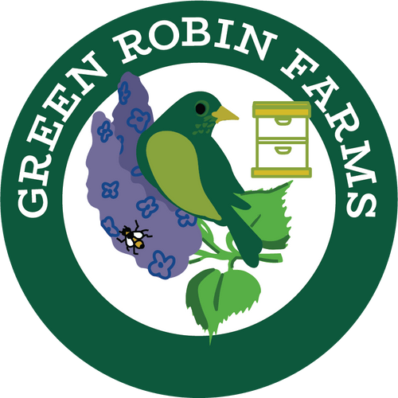

Green Robin Farms - Tree Map

Tree Map Explorer
✕
Filter by Tree Type:
All Tree Types
🔍
Zoom to Selected Trees
Auto-zoom on filter change
Tree Statistics
Total Trees
0
Dominant Tree Type
-
0
trees
(0%)
Filtered Trees
0
(0%)
of total
Tree Types
Click a tree type to filter:
Debug Console
-